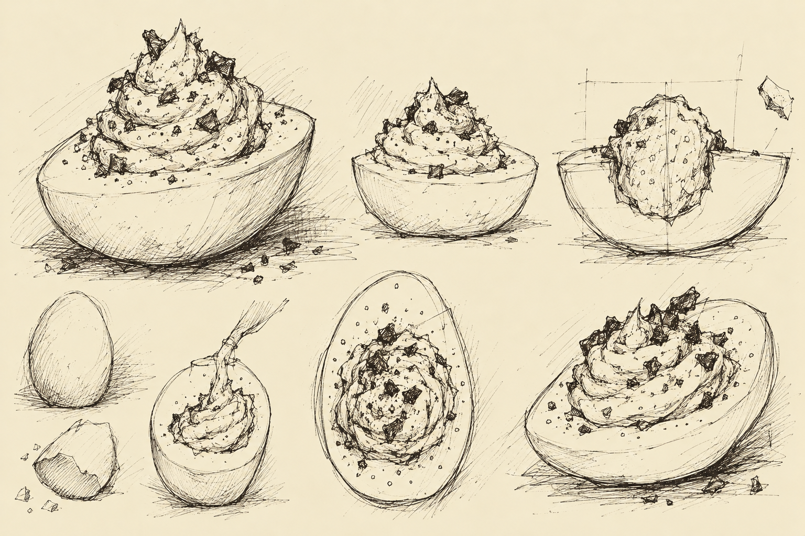

Entry XI
The Offsite Journal of Elias Grimsby
The First Saturday Since Disembarkation
I have continued my search for Subject H-31.
Progress has been limited.
However...
I have located an establishment the Americans refer to as a "diner."
There appeared to be some commotion within.
Several patrons seemed rather disturbed.
This has become a familiar occurrence during my pursuit of Gary.
I entered to investigate.
A woman approached and asked if I would like breakfast.
I explained that I was conducting an investigation of considerable scientific importance.
She asked if I wanted coffee.
I accepted.
I was served bacon, a waffle with maple syrup, orange juice, and coffee.
The Americans seem quite fond of pouring tree secretions over their breakfast.
I find this peculiar.
Though...
I requested more.
My attention returned to the disturbance.
I questioned the woman regarding the unusual behavior of the patrons.
She directed my attention to a nearby booth.
Upon the table were nine peculiar objects.
They appeared to be eggs.
Or portions thereof.
The woman informed me that they were "devilled eggs."
Most troubling.
I was unaware that demonic possession could occur in poultry.
Or that it could be confined to half an egg.
Could this be the work of the dreaded El Pollo Diabolo?
Unlikely.
He hates even numbers.
I look at the chewing patron.
I suppose El Pollo Diabolo would find this more pleasing.
Regardless...
These eggs show no evidence of infernal combustion.
I shall eliminate him as a suspect.
But I shall keep my wits about me.
No one ever expects El Pollo Diabolo.

I examined one of the objects more closely.
As I suspected...
That is H-31's scent.
I questioned the woman regarding the origin of the eggs.
She informed me that there had originally been ten.
I inquired about the missing specimen.
She pointed toward a gentleman seated at the counter.
He was chewing.
I approached the gentleman and questioned him regarding his consumption of the tenth egg.
"I can't say no to a devilled egg," he replied.
Most troubling.
I asked if he had experienced any unusual sensations.
He informed me that his coffee was cold.
I have documented this symptom.
I shall send word to the Institute immediately.
The remaining nine eggs require further examination.
As does the gentleman.
I am sending the remaining nine eggs and the patron back to the Institute for further study.
The search for Gary continues.